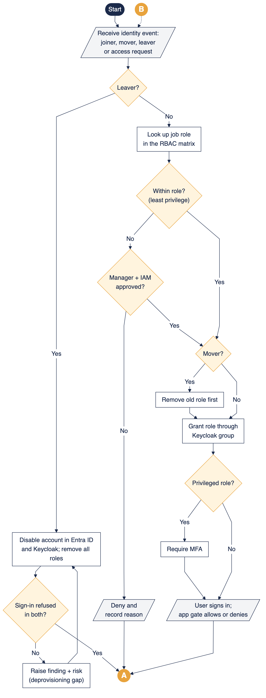
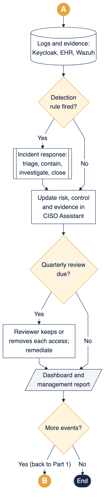

| Rubric criterion | Where it is | What the rubric asks for |
|---|---|---|
| Create a Design Document | This whole document | One design document that meets every criterion |
| Project Summary | 1. Project Summary | At least 2 sentences: the product and why it matters |
| Problem Statement | 2. Problem Statement | At least 1 sentence on the real-world problem |
| Use Case | 3. Use Case | Who will use it, why and how |
| Goals and Objectives | 4. Goals and Objectives | At least 2 specific, clear goals (5 given) |
| Key Features and Functions | 5. Key Features and Functions | At least 3 features (8 given) |
| Tech Stack and Tools | 6. Tech Stack and Tools | All platforms, frameworks and tools needed to build it |
| Algorithm | 7. Algorithm | The high-level function of the product, step by step |
| Flowchart | 8. Flowchart | Standard flowchart shapes showing the high-level function |
| Timeline | 9. Timeline | At least one milestone per month of development |
| Risk Mitigation | 10. Risk Mitigation | One risk with a plan to mitigate it |
| Evaluation Criteria | 11. Evaluation Criteria | At least 3 measures of success (6 given, with results) |
| Future Considerations | 12. Future Considerations | One maintenance need and one future feature |
Care Access Navigator is a simulated hospital security system that controls who can reach patient data, keeps that access correct as staff join, change jobs and leave, catches misuse quickly, and proves all of it to auditors. It connects Microsoft Entra ID and Keycloak (identity and sign-in) to four hospital applications (Patient Portal, EHR, Billing and HR), sends their logs to a Wazuh security monitoring system, and records every risk, control and piece of evidence in CISO Assistant, a GRC platform.
It matters because a hospital's biggest everyday data risk is often not an outside hacker but the wrong person keeping access they should not have: a nurse who moved to Billing and can still open patient charts, or a former employee whose account still works. Under HIPAA, the hospital must be able to show that access is limited, reviewed and removed on time. Care Access Navigator shows how to do that, and how to prove it.
Hospitals must keep electronic protected health information (ePHI) away from everyone who does not need it, yet staff change roles and leave all the time. Access is often granted quickly and removed slowly, so people keep old access, leavers can still sign in, and when an auditor or an incident asks "who could see this record, and who approved it?", there is no reliable answer.
Who: HRMC's IAM analyst and security analyst use it every day; the GRC analyst, department managers (who approve and review access), HR (who starts joiner, mover and leaver changes), auditors and the CISO use its reports. Clinicians, nurses, billing and HR staff use it indirectly every time they sign in.
Why: to give each person exactly the access their job needs, remove it the moment it is no longer needed, spot misuse of patient records quickly, and prove control to HIPAA auditors.
How:
| User | How they use Care Access Navigator |
|---|---|
| HR / manager | Records a joiner, mover or leaver change; approves access requests outside the person's role; signs the quarterly access review. |
| IAM analyst | Runs the change with can_iam.py (joiner, mover, leaver); roles flow from Entra ID app roles into Keycloak groups; checks the person can reach only their applications. |
| Staff member | Signs in once with Microsoft (single sign-on); the application's gate allows or refuses them by role; Billing, IT and Security roles must also pass MFA. |
| Security analyst | Watches Wazuh alerts (for example, a mover opening a patient record they should no longer see), triages, contains and closes the incident case. |
| GRC analyst / auditor | Follows the chain in CISO Assistant: risk → control → evidence → HIPAA requirement → finding → fix, with owners and due dates. |
Example: nurse Tara Jones moves to Billing. Her nurse role is removed first, then the Billing role is added, and MFA is now required. When she later opened patient record PT-1003, Wazuh rule 100221 alerted in 1.3 seconds and she was contained 49 seconds later (incident IR1-2026-002).
| # | Goal | How it is measured |
|---|---|---|
| 1 | Least privilege for every user: each person reaches only the applications their job role allows. | Role-to-application matrix for 7 roles and 4 apps; a wrong-role sign-in is refused (test TC-02). |
| 2 | Correct access through the whole lifecycle: joiners, movers and leavers are handled the same day, with no leftover access. | Joiner, mover and leaver tests pass in Entra ID and Keycloak (TC-01, TC-03, TC-04); leaver sign-in refused in both. |
| 3 | Detect misuse in seconds: alert on risky identity activity such as brute force, a leaver signing in or a mover reading patient records. | Detection rules fire on real test events; alert within 5 seconds; containment within 15 minutes. |
| 4 | Prove compliance: every risk is scored, linked to its control, evidence and HIPAA requirement. | Risk register R01–R05 and HIPAA audit loaded in CISO Assistant; every gap has a finding with an owner. |
| 5 | Review access every quarter and remove anything not needed. | Access review AR-2026-Q4 covers every account, with a reviewer decision on each. |
| # | Feature | What it does |
|---|---|---|
| 1 | Single sign-on with federation | Staff sign in with Microsoft Entra ID; Keycloak brokers the sign-in (OpenID Connect) and maps Entra app roles to Keycloak roles, so the job role travels with the sign-in. |
| 2 | Role-based access control (RBAC) | 7 job roles (Clinician, Nurse, Billing, HR, IT Support, Security Analyst, Vendor) given through Keycloak groups; each of the 4 apps has a sign-in gate that admits only its roles. |
| 3 | Joiner-mover-leaver automation | can_iam.py uses the Keycloak Admin API to add, change and remove access; on a move the old role is removed before the new one is added; every action is written to a hashed audit log. |
| 4 | Sign-in hardening | MFA (one-time code) for Billing, IT Support and Security Analysts; account lockout after 10 failures; 12-character passwords with history. |
| 5 | Security monitoring and alerting | Keycloak, EHR and server logs go to Wazuh; custom rules catch brute force, leaver sign-ins, privilege changes and bulk patient-record access, and email the SOC. |
| 6 | Incident response | Playbooks, an incident case tracker, severity matrix, containment, evidence with chain of custody, and root-cause analysis. |
| 7 | Quarterly access review | Exports every account and its roles, flags stale, excessive or mismatched access, and records the reviewer's keep or remove decision. |
| 8 | GRC system of record | CISO Assistant holds the risk register, controls mapped to HIPAA, NIST CSF 2.0, SP 800-53, ISO 27001 and PCI DSS, evidence, audits, findings and exceptions, with dashboards. |
| Layer | Tool / platform | Used for |
|---|---|---|
| Identity (cloud) | Microsoft Entra ID (free tier) | Workforce users, app roles, enterprise app for single sign-on |
| Identity (lab IdP) | Keycloak with PostgreSQL | Realm, users, groups, roles, MFA, lockout, OIDC clients for the 4 apps, sign-in events |
| Protocols / standards | OpenID Connect, OAuth 2.0, SAML 2.0 | Federation between Entra ID and Keycloak; app sign-in |
| Applications | Patient Portal, EHR simulator, Billing App, HR App | Lightweight simulated apps (OIDC clients) with synthetic data |
| Automation | Python 3 (can_iam.py, scripts), Bash | JML, hardening, access review export, log generation, analysis |
| Containers | Docker Desktop, Docker Compose | Runs Keycloak, PostgreSQL, Wazuh, CISO Assistant and the test servers on one laptop |
| SIEM / monitoring | Wazuh 4.9.2 (manager, indexer, dashboard), MailHog | Log collection, custom detection rules, dashboards, alert email |
| Incident response / forensics | Wireshark / tshark, Volatility 3, dd + SHA-256, iptables | Packet capture, memory and disk analysis, evidence hashing, containment |
| Cloud | Microsoft Azure (VNet, NSGs, Azure Policy, Defender for Cloud, Monitor) | Cloud security design and controls (Cloud Security 1); billable parts removed after the course |
| GRC | CISO Assistant (community edition) | Risk register, controls, evidence, HIPAA audit, findings, exceptions, dashboards |
| Frameworks | HIPAA, NIST CSF 2.0, NIST SP 800-53 / RMF, ISO/IEC 27001:2022, PCI DSS v4.0.1, MITRE ATT&CK | Requirements, control vocabulary, detection mapping |
| Planning | Monday.com | 12-week project board and status tracking |
| Design and diagrams | Figma, Lucidchart, Mermaid | Flowcharts, architecture and workflow diagrams |
| Documentation | Microsoft Word, Excel, PowerPoint, Markdown, PDF | Policies, procedures, registers, reports, presentations |
| Version control / portfolio | Git, GitHub, GitHub Pages | Repository of all evidence and the public portfolio site |
| AI assistant | Claude | Help with scripting, document drafting and checking; every output reviewed against the live systems |
The high-level function of Care Access Navigator, from an identity change to proof for the auditor:
The flowchart uses standard flowchart shapes and follows the algorithm in section 7. It is drawn in two parts joined by
on-page connectors A and B. Source: design_documentation_1/diagrams/.

 |
Shapes used
Figure 2. Part 2: monitor, respond and govern (steps 10–15). Connector B returns to "Receive identity event" in Part 1. |
Development ran over five months of the DAE program, with the 12-week capstone from August to early November and the security operations courses after it. At least one milestone was completed in every month.
| Month | Phase | Milestones | Status |
|---|---|---|---|
| July 2026 | Research and role choice | Cybersecurity track research; IAM and GRC analyst roles chosen; job descriptions and skills mapped; first Python program (MoodBuddy) built. | Done |
| August 2026 | Planning and design | Milestone: project design document v1.0 (Aug 3) and v1.1 (Aug 11); 12-week Monday.com board approved; scope, stakeholders, roles and architecture defined; GitHub portfolio started. | Done |
| September 2026 | IAM lab and risk foundation | Milestone: Keycloak realm with users, 7 roles and 4 application clients; threat analysis and network design; risk register R01–R05 with scoring and treatment (Risk Management 1). | Done |
| October 2026 | Federation, cloud and compliance | Milestone: Entra ID ↔ Keycloak federation; Azure security controls (Cloud Security 1); full joiner-mover-leaver cycle in both systems (Oct 19); HIPAA + PCI DSS compliance program and internal audit (Compliance 1). | Done |
| November 2026 | Hardening, monitoring and proof | Milestone: incident response lab and 3 incidents (Nov 3); live hardening and end-to-end tests 10/10 (Nov 3); CISO Assistant as GRC system of record (Nov 4); Wazuh SOC and monitoring (Nov 18–19); final demo and this design document. | Done |
| Item | Detail |
|---|---|
| Risk | R02: Leaver keeps access (incomplete deprovisioning). When a person leaves, their account is disabled in Entra ID, but the federated copy in Keycloak can stay active, so a former employee could still reach hospital apps and ePHI. |
| Evidence | Found by my own test on October 19, 2026: Jeevan Smith was disabled in Entra ID at 18:13, but his Keycloak copy still showed enabled=True, roles=billing at 18:25. Tracked as finding CAN-FIND-001. |
| Rating | High (likelihood: likely without a control; impact: unauthorized ePHI access and a HIPAA termination-procedure violation, 45 CFR 164.308(a)(3)(ii)(C)). |
| Mitigation plan |
|
| Owner | IAM analyst (process), security analyst (detection), GRC analyst (tracking) |
| # | Measure of success | Target | Result |
|---|---|---|---|
| 1 | End-to-end security tests pass (joiner, mover, leaver, wrong-role access, MFA, lockout, detections) | 10 of 10 | 10/10 pass (TC-01 to TC-10) |
| 2 | Accounts covered by the quarterly access review | 100% | 16/16 accounts reviewed in AR-2026-Q4 |
| 3 | Controls passing their tests | At least 80% | 57% → 86% after the November hardening |
| 4 | Time to detect and contain record misuse | Alert under 5 s; contain under 15 min | Alert in 1.3 s; contained in 49 s (IR1-2026-002) |
| 5 | HIPAA audit requirements met | Every gap has a finding and owner | 17 of 25 compliant, 7 partial, 1 not met; all gaps tracked as findings or approved exceptions |
| 6 | Detection rules fire on real test events | At least 3 rules | Custom Wazuh rules CAN-ID-001 to CAN-ID-007 (password guessing, disabled-account sign-in, unapproved app access, privilege change, bulk ePHI access) fire on test events |
| Type | Detail |
|---|---|
| Maintenance need | Keep access reviews and the platform current. Run the access review every quarter and have managers sign it; patch Keycloak, Wazuh, PostgreSQL and CISO Assistant to supported versions; tune detection rules to cut false alarms; renew certificates; and export the Keycloak realm before every change so it can be restored. |
| Future functionality | Automatic provisioning with SCIM. Connect Entra ID to Keycloak with SCIM so a leaver disabled in Entra ID is disabled in Keycloak within seconds, closing risk R02 for good. A self-service access-request portal, where staff request access and managers approve it in one place, would follow. |
| Also considered | A continuously running SIEM feed for every app, 12-month log retention (exception EX-02 today), Entra ID group-based assignment (needs Entra ID P1) and more incident simulations. |